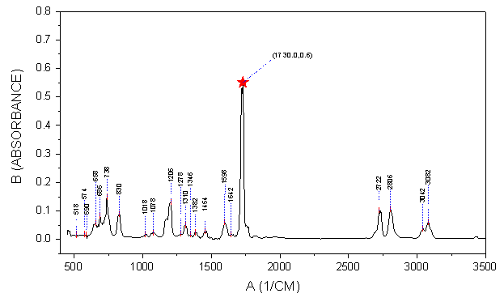
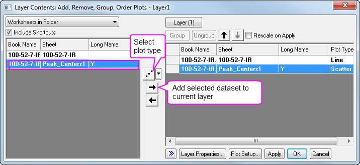
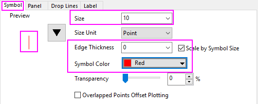
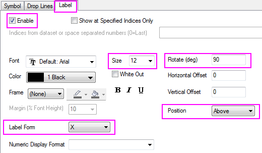
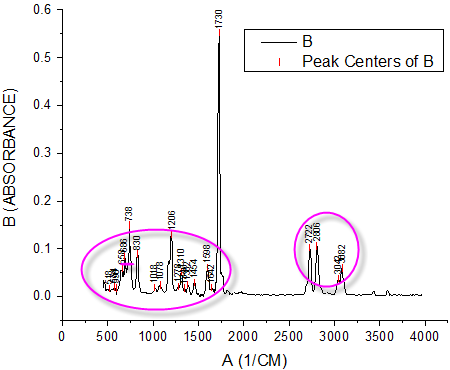
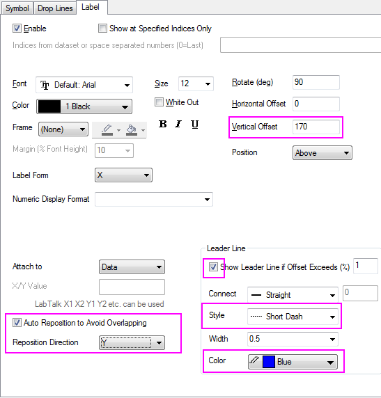
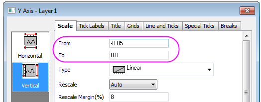
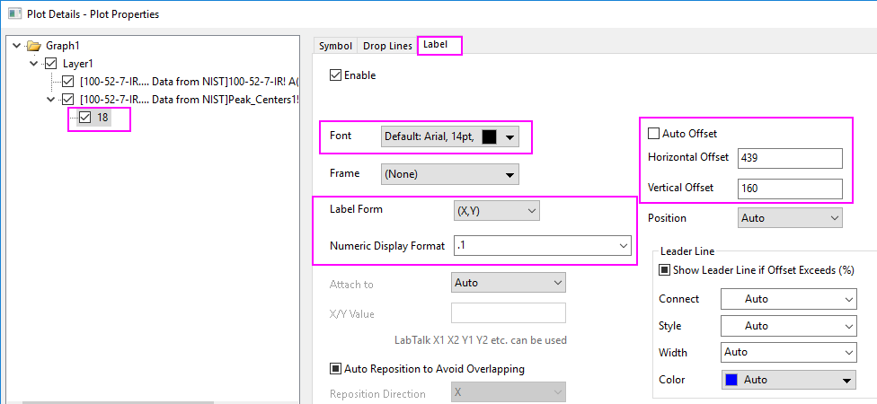
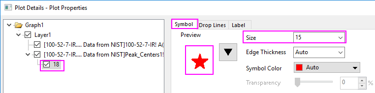
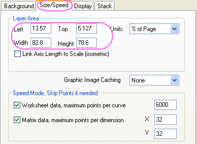

Intelligente Beschriftung von Peaks mit Verbindungslinie
SmartLabels
Zusammenfassung
Bei Linien-/Symboldiagrammen im kartesischen 2D-Koordinatensystem unterstützt Origin intelligente Beschriftungen, die automatisch neu positioniert werden, um eine Überschneidung zu vermeiden. Verbindungslinien (sowohl gerade als auch krumme Linien) können hinzugefügt werden, um Datenpunkte und ihre Beschriftungen miteinander zu verbinden.

Origin-Version mind. erforderlich: Origin 2016 SR0
Was Sie lernen werden
Dieses Tutorial zeigt Ihnen, wie Sie:
- intelligente Beschriftungen mit Verbindungslinien hinzufügen.
- einen speziellen Datenpunkt hinzufügen und seine Beschriftung benutzerdefiniert anpassen.
Intelligente Beschriftungen hinzufügen
Dieses Tutorial basiert auf dem Projekt: <Origin-Verzeichnis>\Samples\Tutorial Data.opj.
- Öffnen Sie das Projekt Tutorial Data.opj und navigieren Sie zu dem Ordner Smart Peak Labels with Leader Line im Projekt Explorer.
- Es gibt zwei Blätter in der Arbeitsmappe A100527IR. 100-52-7-IR sind IR-Absorptionsdaten, und Peak_Centers1 ist das Ergebnis für die Peakzentren, die von Origins Hilfsmittel Peaks analysieren gefunden wurden.
- Markieren Sie Spalte Col(B) im Blatt 100-52-7-IR, um ein Liniendiagramm zu zeichnen, indem Sie im Menü Zeichnen: Einfache 2D: Liniendiagramm wählen.
- Klicken Sie doppelt auf das Layersymbol 1, um den Dialog Layerinhalt zu öffnen. Markieren Sie col(pcy) im linken Bedienfeld. Klicken Sie auf die Auswahlliste neben Schaltfläche A in der Mitte und wählen Sie Punktdiagramm als Diagrammtyp. Klicken Sie auf die Schaltfläche ->, um die Daten zu dem Diagramm hinzuzufügen.
- 
- Wählen Sie im Dialog Details Zeichnung die zweite Zeichnung im linken Bedienfeld, gehen Sie zur Registerkarte Symbol und nehmen Sie folgende Einstellungen vor:
- 
- Wechseln Sie zur Registerkarte Beschriftung, aktivieren Sie das Kontrollkästchen Aktivieren und nehmen Sie die Einstellungen, wie unten zu sehen, vor:
- 
- Klicken Sie auf die Schaltfläche Anwenden. Sie werden sehen, dass sich einige Beschriftungen überschneiden.
- 
- Gehen Sie zurück zur Registerkarte Beschriftung, aktivieren Sie das Kontrollkästchen Automatische Neupositionierung, um Überschneidungen zu vermeiden, wählen Sie Y in der Auswahlliste Richtung der Neupositionierung und legen Sie die Gruppe Verbindungslinien wie unten fest: Setzen Sie auch den Vertikalen Versatz auf 170, so dass die Verbindungslinien offensichtlicher sind
- 
- Klicken Sie auf OK, um den Dialog zu schließen. Sie werden feststellen, dass die Beschriftungen intelligent neu positioniert werden.
Einen einzelnen Punkt und seine Beschriftung benutzerdefiniert anpassen
- Die Beschriftung des höchsten Peaks ist nicht zu sehen. Klicken Sie doppelt auf die Y-Achse, um den Dialog Achsen zu öffnen, wählen Sie das Symbol Vertikal auf der Registerkarte Skalierung und legen Sie die Werte für Von und Bis mit -0,05 bzw. 0,8 fest. Klicken Sie auf OK, um die Einstellung anzuwenden.
- 
- Drücken Sie die Strg-Taste und klicken Sie doppelt auf die Beschriftung des höchsten Peaks 1730, um den Dialog Details Zeichnung zu öffnen. Der Knoten 18 wird im linken Bedienfeld gezeigt. Es handelt sich hierbei um den Zeilenindex dieses speziellen Punkts.
- Gehen Sie zur Registerkarte Beschriftung dieses Punkts und passen Sie ihn weiter benutzerdefiniert an.
- 
- Wechseln Sie zur Registerkarte Symbole, um Symbolform und -größe zu ändern.
- 
Weitere Schritte der benutzerdefinierten Anpassung
Die folgenden Schritte können das Diagramm weiterführend benutzerdefiniert anpassen, um genau so auszusehen, wie das Bild unter Zusammenfassung.
- Klicken Sie doppelt auf die X-Achse, um den Dialog Achsen zu öffnen. Legen Sie für die X-Achse die Werte Von und Bis mit 400 bzw. 3500 fest.
- Um die oberen und rechten Rahmen um das Diagramm zu zeigen, wählen Sie die Seite Gitternetze im Dialog Achsen. Aktivieren Sie das Kontrollkästchen Gegenüber im Zweig Zusätzliche Linien sowohl für Horizontal als auch für Vertikal.
- Um die Layergröße zu ändern, wählen Sie Format: Layer im Hauptmenü. Der Dialog Details Zeichnung wird geöffnet. Wechseln Sie zur Registerkarte Größe und Performance und ändern Sie die Layergröße in der Gruppe Layerbereich, wie unten zu sehen:
- 
- Markieren Sie die Legende und drücken Sie die Taste Entfernen, um sie zu löschen.